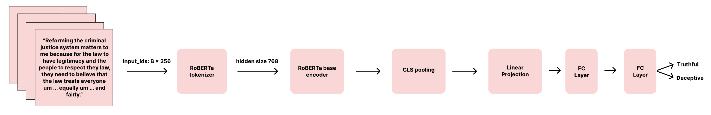
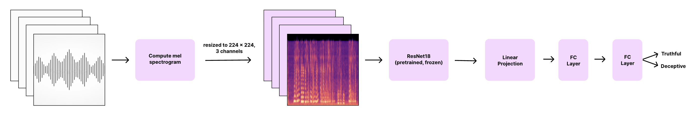
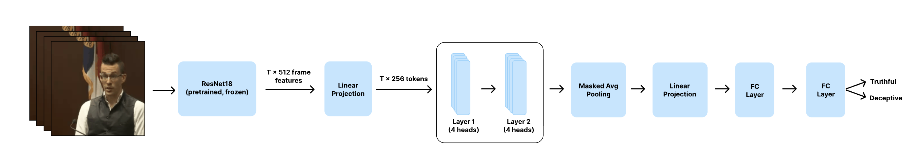
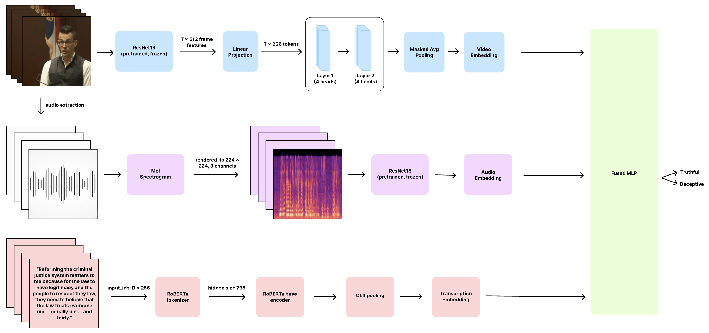
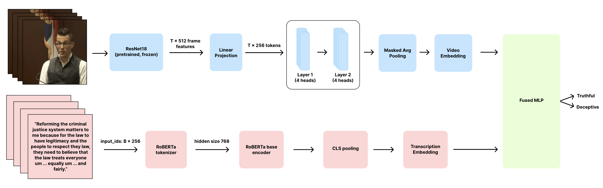
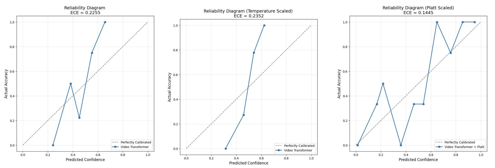
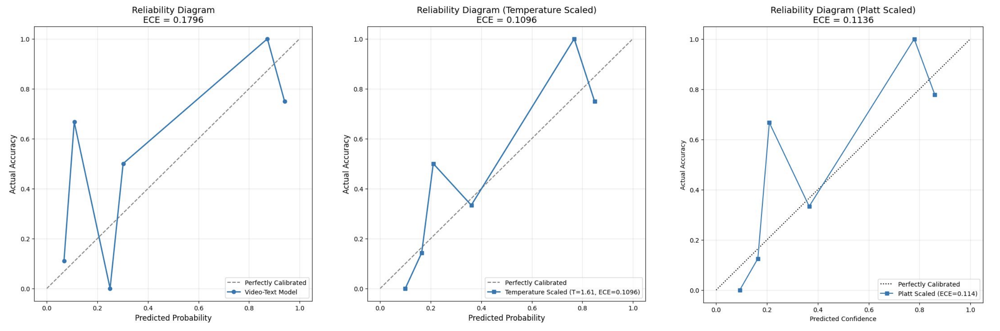

3 Modalities & 1 Lie Detector: Calibrated Deep Learning for Real-World Deception
1. Introduction
1.1 Motivations
Accurately predicting the truthfulness of statements is critical in legal and security settings. However, human communication is inherently multimodal, manifesting not only in spoken words but also in vocal intonation, facial expressions, and body language, making this task challenging for automated systems. Recent advances in deep learning have demonstrated strong capabilities in extracting patterns from human behavior, especially when using transformer based language models and neural video architectures [1].
Yet, even when these models achieve accuracy, their confidence estimates are often poorly calibrated. Modern deep networks are known to be overconfident, which is dangerous in high stakes settings where decisions may depend on a model’s certainty [2]. In the domain of deception detection, this risk is amplified. An overconfident model may assign high deception probabilities when evidence is ambiguous, while a well calibrated model would better reflect underlying uncertainty.
For this reason, we argue that probability calibration, such as ECE (Expected Calibration Error) [3], is a crucial component of any deception detection system intended for real world use. By explicitly evaluating and improving calibration, we aim not only to improve predictive performance but also to ensure that model confidence scores are trustworthy enough to support sensitive decision making in ways never before achieved.
1.2 Past Works
Despite lie detection being studied, significant challenges still remain in developing models that can integrate multimodal cues in a contextualized manner. Early work, such as the Box of Lies study, used Random Forests over annotated features, demonstrating the promise of multimodal signals but suffering from labor intensive annotation and limited scalability [4]. Later research automatically extracted visual, audio, and text features, but these shallow machine learning classifiers failed to exploit cross modal interactions [5]. Other studies highlight useful lexical cues but do not leverage modern representation learning [6]. More recent multimodal approaches, such as Ding et al.’s CNN based models, still do not incorporate audio or linguistic information, nor do they utilize transformer based attention mechanisms to reason over contextual dependencies [7].
Another limitation in prior literature is the lack of focus on the reliability of the predicted probabilities. For instance, Perez Rosas et al. created a deception detector combining both verbal and non verbal modalities, but their evaluation was limited to standard metrics like accuracy [8]. There has also been a new MM-DeceptionBench introduced for deception in large vision language models, which incorporates ECE alongside accuracy and other metrics, but its focus is on machine machine deception rather than human deception in videos, audios, and text [9]. Meanwhile, deep learning research has shown that modern models are often poorly calibrated even with low classification error, and methods such as temperature scaling and Platt scaling offer simple and effective post hoc calibration techniques [10, 12]. Yet deception detection research rarely reports ECE or analyzes miscalibration, leaving a critical gap for high stakes applications where overconfident errors are dangerous, such as in a courtroom setting [3].
Our work addresses these gaps by:
- Evaluating multiple combinations of modalities and deep learning architectures.
- Explicitly framing deception detection as a calibrated probabilistic problem.
- Performing head to head comparisons of temperature scaling and Platt scaling in single modality and multimodal fusion settings.
By combining multimodal deep learning with systematic calibration analysis, we connect two previously separate research threads and provide insights necessary for deploying lie detection systems in real world, high stakes environments.
1.3 Goals
This project addresses these limitations by evaluating how incorporating audio, visual, and linguistic information, alongside transformer based architectures, can improve the accuracy and calibration of lie detection. Attention mechanisms enable the model to weigh different features, better capturing subtle cues that traditional models overlook. We combine specialized architectures by training separate models on visual, audio, and transcript data, and then passing their learned representations into a final classifier. This allows us to integrate complementary strengths across modalities, thereby enhancing the robustness and interpretability of deception detection systems.
2. Methods
2.1 Data
To develop a deception detector grounded in high stakes, real world lying behavior, we used a multimodal dataset [8] collected from actual court trials. The dataset consists of 121 curated trial video clips (61 deceptive, 60 truthful), ranging from 20 to 50 seconds in length, featuring a single speaker’s face and high quality audio and visuals. For every clip, we obtained a verbatim transcript of the defendant’s speech, annotated via Amazon Mechanical Turk.
Ground truth labels (truthful or deceptive) were derived from trial outcomes and corroborating evidence, including guilty, not guilty, and exoneration verdicts. For instance, deceptive clips include suspects denying crimes they later confessed to, whereas truthful clips include suspects’ statements independently verified by police and confirmed testimonies from law enforcement investigations [8].
Figure 1: Sample video from courtroom trial videos in dataset.
2.2 Architectures
We model three modalities separately: video, text (transcripts), and audio. Then, we built multimodal architectures that combined these data modalities. This allows us to test whether integrating additional modalities improves deception predictions and compare this against unimodal model architectures.
2.2.1 Transcriptions
Figure 2: Architectural diagrams for the transcription specific model.
Transcription Preprocessing
We use the pretrained RoBERTa tokenizer [13] to convert each transcript directly into subword tokens, truncating or padding sequences to a maximum length of 256 and generating attention masks to distinguish real tokens from padding.
Transcription Architecture
We evaluate two RoBERTa based architectures. Our first approach uses RoBERTa purely as a feature extractor. The tokenized transcript is fed into the pretrained encoder, the <s> embedding is taken as a sequence level representation, and a dropout layer [23] plus linear classifier maps it to a single deception logit. Only the classifier head is trained.
The second model follows the same pipeline but fine tunes the entire RoBERTa encoder using a small learning rate, while the classifier head trains with a larger one. This allows the model to adapt its language representations to cues specific to deception.
The fine tuned model outperforms the frozen model, likely because fine tuning allows RoBERTa to adapt its internal representations to capture subtle signals. This is especially important given our small dataset of roughly 100 videos. With limited training data, the classifier head alone cannot learn sufficiently rich features, but full fine tuning enables RoBERTa’s large pretrained knowledge to be specialized to this domain [13]. Because of this, we adopt the fine tuned transcription model in our system.
2.2.2 Audio
Figure 3: Architectural diagrams for the audio specific model.
Audio Preprocessing
To model deception related cues in vocal patterns, we built audio classifiers that operate on the mel spectrogram images produced during this preprocessing step. In order to analyze the vocal patterns, we first extracted the soundtrack from each video using FFmpeg [14] and converted it to a mono waveform at 16 kHz using Librosa [15]. We then processed the waveform to compute a mel spectrogram, which serves as the input to the audio classifiers. The mel spectrogram was generated using a 1024 point FFT window, a 512 hop length, and 64 mel frequency bins, and then transformed into the decibel scale to enhance contrast in speech energy differences.
To make the audio compatible with our convolutional backbone, each spectrogram was rendered as a PNG and saved to disk. During dataset loading, these images were resized to 224 × 224 pixels, converted into three channel tensors by repeating the single grayscale channel, and normalized using ImageNet statistics [16]. This allowed us to feed them directly into a pretrained ResNet18 [17].
Audio Architecture
We developed a stronger transfer learning based architecture using a pretrained ResNet18 to analyze audio. In order to use ResNet18 [17], we adapted its first convolutional layer to accept single channel spectrograms. Like before, to avoid overfitting, we froze most of the backbone parameters and selectively unfroze only the deeper layers (Layer 3, Layer 4) along with the classification head. We then replaced ResNet18’s original fully connected layer with a custom head consisting of dropout [23], a 512 unit linear layer with ReLU activation, another dropout layer, and a final linear layer that maps to the two output logits.
This architecture allows the model to take advantage of the robust feature extraction capabilities learned from large scale image datasets while still adapting to speech specific spectral patterns related to deception.
2.2.3 Video
Figure 4: Architectural diagrams for the video specific model.
Video Preprocessing
For the video modality, we uniformly sampled 20 frames from each clip and resized them to 224 × 224 pixels. Frames were converted to a 3 channel RGB and normalized using the standard ImageNet [16] mean and standard deviation, matching the distribution expected by the pretrained CNN. Features were then extracted from each frame using a pretrained ResNet18 [17], which helped the model identify generic visual patterns such as edges, textures, and shapes. From there, we performed global average pooling to turn each frame into a 512 dimensional feature vector.
Video Architecture
We then built two sequence models on top of the preprocessed video representations: an RNN and a transformer encoder.
RNN
For the RNN architecture, the video representations were fed into a bidirectional GRU [18, 19], which can model temporal dynamics in facial expressions, posture, and gaze [20, 21]. The bidirectional structure also allows each frame to be informed by both past and future context, which is essential, since cues for lying often emerge from sequences of frames of micro expressions rather than isolated frames [18, 19]. Then, in the final layer of the GRU, the forward and backward hidden states are concatenated into a 256 dimensional representation. This output is passed to a classification head that outputs two logits (deceptive or truthful), which are converted to class probabilities via softmax.
Transformer
For the transformer architecture, the video representations were first transformed into suitable tokens by projecting each 512 dimensional frame feature into a 256 dimensional vector and adding positional encoding to make the model time aware of frame ordering. The core of the transformer model is a stack of two transformer encoder layers. In each layer, tokens pass through a multi head self attention sublayer with four attention heads, followed by a two layer feedforward network, with residual connections and normalization around both sublayers. From there, masked mean pooling is applied to compress the encoder's sequence of token embeddings into a 256 dimensional representation, which is then passed through a classification head to produce logits, and via softmax, class probabilities.
2.2.4 Video, Audio, and Transcription
Figure 5: Architectural diagram of the multimodal fusion model which integrates embeddings from the three separately trained encoders.
To leverage information from audios, transcriptions, and videos, we developed a multimodal fusion model that integrates features from all three separately trained encoders. Rather than simply concatenating unimodal logits or embeddings, we employ a learned gated fusion mechanism that dynamically determines how much each modality should contribute to the final prediction of each sample [22].
Each encoder first produces a fixed dimensional embedding. The video encoder outputs a 512 dimensional representation of frame level features, the audio encoder outputs a 512 dimensional representation from mel spectrogram inputs, and the text encoder outputs a 768 dimensional RoBERTa embedding [13], which we project to 512 dimensions for consistency. All embeddings are layer normalized and contained, then passed into a small gating network that outputs three modality specific scalar gates. After a sigmoid activation, these gates range from 0 to 1 and modulate the contribution of each modality by element wise scaling its embedding, allowing the model to decide how much to weigh each modality on a per sample basis. For example, when it believes the audio input is most informative, it will increase the weight corresponding to audio.
The gated and scaled embeddings are concatenated to form a unified multimodal representation, which is processed by a lightweight MLP consisting of a linear projection to 128 dimensions, a ReLU activation, dropout for regularization [23], and a final linear layer that outputs a single logit corresponding to the deception probability. By learning both modality specific gates and a joint classifier, the model captures interactions across modalities while remaining robust to noisy or weak signals in any individual stream.
2.2.5 Video and Transcription
Figure 6: Architectural diagram of the bimodal model which integrates embeddings from the video and transcription encoders.
Finally, guided by the results of previous models, we also created a bimodal model using video and text transcription modalities. Here, we combined the best performing video architecture with the best performing text transcription architecture. Each data modality model’s architecture was combined by concatenating its logits (each 256 dimensional) and feeding the result to a small MLP head. The MLP classifier consists, in order, of a fully connected layer with 512 units, a ReLU, a dropout layer [23], and a fully connected layer that maps 512 units to 2 logits (deceptive vs truthful).
2.3 Training and Evaluation
For training, our dataset was split in the ratio of 80:20. Within the 80% partition, we used 5 fold cross validation (CV) to train our models [24]. The 20% was withheld until the very end to conduct final evaluations.
In addition to standard performance metrics like accuracy, AUC, and F1 score, we also evaluated model calibration using the Expected Calibration Error (ECE) [2, 12]. While metrics like accuracy and F1 score are standard for performance, ECE can measure our models’ trustworthiness, which is especially critical in this domain of deception detection [2, 12]. ECE measures the gap between confidence and accuracy by partitioning the predicted probabilities into M = 10 uniform bins [2, 12]. For each bin, we calculated three values: the mean predicted probability, conf(b); the fraction of correctly classified samples, acc(b); and the number of samples in the bin, nb. Then our ECE was defined as:
A lower ECE indicates better calibration, and we visualized this through reliability diagrams, graphing conf(b) against acc(b) and using the identity line as a reference for perfect calibration [2].
To improve calibration, we applied two post hoc techniques with the model weights frozen: temperature scaling and Platt scaling [2, 10]. Temperature scaling rescales the logits by a single learned parameter T, which is optimized on a held out calibration split by minimizing cross entropy [2]. Platt scaling fits a logistic regression model on the scalar score difference between classes [10]. To do this, we collapsed the logits from our models’ predictions for the two classes into a scalar s = z1 − z0. The goal of the logistic regression model was to learn two parameters, A and B, by minimizing binary cross entropy loss [10]. By having two parameters, Platt scoring offers a more flexible correction and can fit more complex miscalibration patterns than a single parameter temperature scaling [10].
3. Results
3.1 Unimodal Models
Transcriptions
The fine tuned RoBERTa model performed substantially better than the frozen version, achieving a mean CV accuracy of 0.698 (SD = 0.090) compared to only 0.479 (SD = 0.011). This significant performance gap highlights the importance of domain adaptation [25], as allowing the encoder to reshape its representations to courtroom specific linguistic cues nearly doubled the accuracy. The frozen model performed at random chance levels across all folds. In contrast, the fine tuned model showed substantial improvements, despite being highly prone to overfitting due to the small dataset size and RoBERTa’s 125 million parameters [13]. This underscores that even limited fine tuning [26] enables RoBERTa to capture domain specific patterns that static embeddings cannot.
Audio
The best performing architecture for audio was the ResNet18 transfer learning model applied to mel spectrogram images, achieving a mean accuracy of 0.690 (SD = 0.059). This indicates that vocal sounds may provide meaningful cues for deception, even when analyzed independently of facial or linguistic content. The ResNet18 model performed consistently across folds and achieved good accuracy, suggesting that the pretrained backbone was better able to capture subtle spectral patterns associated with hesitations, stress, pitch shifts, and energy distribution. This is likely due to the higher variability and noise in courtroom audio recordings, as well as the many factors that affect the conversion of an audio signal to a spectrogram. Variability across folds also suggests sensitivity to the small dataset size, despite attempts to regularize via layer freezing and dropout.
Video (RNN vs transformer)
The transformer model performed better than the RNN, achieving a CV accuracy of 0.729 (SD = 0.089) compared to 0.699 (SD = 0.071). However, the difference was modest, and there is overlap in fold level variability. The transformer’s slight advantage likely stems from its ability to examine relationships between distance frames through self attention [27]. In contrast, the RNN must carry this information sequentially, which means early frame information can become diluted at later time steps [28].
Overall Unimodal Conclusions
Across all three unimodal models (transcript, audio, and video), we find that each modality independently carries cues for deception, but their predictive strengths differ considerably. Video provided the highest unimodal performance at 0.729, followed by transcript data at 0.698, and audio at 0.690. The unimodal results show that text and video are the strongest predictors individually, while audio is a moderate but meaningful complementary signal. This difference in predictive strength validates the approach of combining their complementary information through multimodal fusion [29].
3.2 Multimodal Models
Because our audio model performed worse than the others, we decided to run two multimodal models: one using all three modalities and another using just transcript and video. We found the bimodal model performed better than the trimodal model. This likely occurs because adding the audio component significantly increases the number of model parameters, thereby promoting overfitting.
| Method | Cross Validation (CV) Accuracy |
|---|---|
| Transcription with Frozen RoBERTa | 0.479 (±0.011) |
| Transcription with Unfrozen RoBERTa | 0.698 (±0.090) |
| Audio CNN | 0.690 (±0.059) |
| Video GRU | 0.699 (±0.071) |
| Video Transformer | 0.729 (±0.089) |
| Transcription plus Video Fusion | 0.729 (±0.045) |
| Transcription plus Video plus Audio Fusion | 0.570 (±0.042) |
3.3 Expected Calibration Error (ECE)
ECE scores were computed for our top two models: the unimodal video transformer and the bimodal transcription and video model. As shown in Table 2, on the held out test set, the video transformer achieved higher accuracy (0.80 vs 0.76), with an AUC of 0.846 and an F1 score of 0.783. The model also had a raw ECE of 0.2255, which was temperature scaled to be 0.2352 and Platt scaled to be 0.1445. In comparison, the bimodal model yields a better baseline calibration than the unimodal model, with a raw ECE of 0.1796. Scaling techniques further improved this score, with temperature scaling dropping the ECE to 0.1096 and Platt scaling dropping it to 0.1136. The bimodal model also achieved a slightly higher AUC of 0.853, despite having lower accuracy.
 Figure 7: Reliability plots for the video model (top row) and the bimodal video transcription model (bottom row). Each row shows the uncalibrated model, temperature scaled model, and Platt scaled model, along with the corresponding ECE.
| Method | Test Accuracy | AUC | F1 Score | ECE | ECE + Temperature Scaling | ECE + Platt Scaling |
|---|---|---|---|---|---|---|
| Video Transformer | 0.80 | 0.846 | 0.783 | 0.2255 | 0.2352 | 0.1445 |
| Transcription plus Video | 0.76 | 0.853 | 0.727 | 0.1796 | 0.1096 | 0.1136 |
Another additional consideration is examining the confidence distributions. The video transformer’s predictions are clustered around 0.5, showing high uncertainty across most samples. In contrast, the bimodal model showed a bimodal distribution, indicating that it makes more decisive predictions. This demonstrates that the model separated the classes more clearly, but also made more confident errors. This presents an essential trade off for real world settings. While the bimodal model has better calibration metrics and lower ECE, its confident incorrect predictions may be more problematic in high stakes legal settings where uncertainty should be acknowledged rather than masked by false confidence.
Figure 8: Histograms of predicted confidences for the Video Transformer (left) model and the combined Transcription plus Video (right) model.
4. Discussion
4.1 Limitations
The dataset offers substantial advantages over prior collections [3] by capturing deception in authentic, high stakes situations. It also provides rich, multimodal data, includes multiple speakers, and features clear facial/body movements, audio, and accurate transcriptions.
However, despite these strengths, the dataset remains narrowly scoped. All 121 clips are gathered from similar English speaking courtrooms [8]. As such, these models may not generalize to conversations in different languages, cultures, or contexts, such as police interviews or everyday dialogue.
A further limitation is the definition of ground truth. Although the clips come from real trials, the deception labels are inferred from case outcomes and corroborating evidence rather than from direct verification of what the speaker said in the specific clip. This introduces several risks. A verdict may not perfectly correspond to the truthfulness of a particular statement. Some statements may be partially truthful, strategically incomplete, or socially motivated “white lies,” none of which map cleanly onto binary truth/false labels. Moreover, structural biases within the criminal justice system, including racial and socioeconomic disparities, could influence which speakers are more likely to be labelled deceptive. A model trained on these labels may inadvertently learn and reproduce those biases [30].
Because the dataset is small, our models, especially large architectures such as RoBERTa and the transformer based video encoder, are prone to overfitting [25]. Fine tuning improves accuracy but also increases the risk that models memorize the specific individuals and courtroom context rather than learning generalizable deception cues. Calibration estimates may also be unstable due to limited sample size [2]. Finally, each modality encoder in our work is trained largely in isolation before fusion, which may restrict the model’s ability to learn cross modal interactions [29]. Despite our robust tests, future work can focus on mitigating these limitations.
4.2 Implications
First, the improved performance of the unfrozen RoBERTa model over the frozen RoBERTa model demonstrates the importance of incorporating domain adaptation into language encoders [26]. Even though RoBERTa is pretrained on a vast corpus of English text, including BookCorpus and Wikipedia [13], its representations are not a good fit for the language in trial transcripts, which can be highly specific and sometimes emotionally charged. Allowing the encoder to update its weights on this specific task of trial data text almost doubled the CV accuracy from 0.479 to 0.678, underscoring the importance of end to end fine tuning for language based deception detection.
Furthermore, the transformer’s improved performance over the RNN model underscores the importance of architectural choices for encoding temporal information [27]. The transformer yielded slightly higher CV accuracy than the GRU based RNN, which is consistent with the idea that incorporating attention heads with a transformer allows the model to capture longer range dependencies from different frames of a video, which provides for common lying behaviors, like changes in facial expressions or repeating physical movement quirks, to be picked up on [27]. However, the gain is also relatively modest, with overlapping variability, suggesting that we cannot guarantee that going from an RNN to a transformer alone will cause a significant improvement. This demonstrates that when computation resources are limited, a well tuned RNN model can serve as a reasonable baseline, whereas transformers are preferred when resources are more readily available [31].
Additionally, across the various multimodal experiments we conducted, we found that incorporating more modalities does not inherently improve the model [29]. In fact, using only two of the modalities (transcription and video) is better than the three modality model (transcription, video, and audio), likely because the added spectrogram CNN increases the model’s parameters and converting audio to spectrograms can add a lot of additional noise and bias, especially if the audio quality is variable across clips.
For real world applications, the calibration analysis provides promising work. The video transformer achieved the highest test accuracy on the held out dataset, but it is also less well calibrated than the transcription plus video fusion model. However, examining the models’ probabilities, which yield an almost bimodal distribution, reveals that the transcription plus video model has quite confident predictions, which, in a legal setting, may be less preferred than slightly lower accuracy [2]. These results show that examining multiple aspects of a model is important when evaluating how well it performs in the context you want it to perform in.
4.3 Future Work
This project demonstrates the value of multimodal analysis for real world lie detection, but improving robustness will require training models jointly across modalities rather than independently [29]. Future work should consider co training or contrastive multimodal learning to capture better interactions among audio, visual, and linguistic cues.
Given the limitations of our dataset, future systems should also prioritize greater data diversity and incorporate debiasing methods to prevent models from learning irrelevant correlations [30]. Evaluations should explicitly measure fairness across gender, race, age, and other attributes, which is critical before these models are deployed in real world decision making contexts.
Acknowledgments
We would like to thank Professors Sara Beery, Kaiming He, and Omar Khattab for an incredible 6.7960 experience. We really appreciated the enthusiasm all three brought to teaching, as well as their own unique teaching styles, whether that meant precise laser-pointer aim or sharing funny deep learning failures! We also extend a huge thank-you to the 6.7960 teaching staff for tirelessly running office hours (some of those queues got quite long!) Given the sheer size of the class, we especially appreciate the timely feedback on grading and Piazza posts. Lastly, thank you to TeaDo for fueling us, especially the gyudon, salmon and spam onigiri, and 50% sugar, no ice, Thai tea boba.
References
- Zhang, Xiuliang, et al. “A Framework Combining 3D CNN and Transformer for Video Based Behavior Recognition.” arXiv, 2025. https://arxiv.org/abs/2508.06528.
- Guo, Chuan, et al. “On Calibration of Modern Neural Networks.” Proceedings of the 34th International Conference on Machine Learning, PMLR, vol. 70, 2017, pp. 1321–1330. https://proceedings.mlr.press/v70/guo17a.html.
- Guo, Xiaobao, et al. “Audio Visual Deception Detection: DOLOS Dataset and Parameter Efficient Crossmodal Learning.” arXiv, 2023. https://arxiv.org/abs/2303.12745.
- Fonseca, Erick, et al. “Findings of the WMT 2019 Shared Tasks on Quality Estimation.” Proceedings of the Fourth Conference on Machine Translation (Volume 3: Shared Task Papers, Day 2), Association for Computational Linguistics, 2019, pp. 1–10. https://aclanthology.org/W19-5401/.
- Zhang, Jiajie, Sarah Ita Levitan, and Julia Hirschberg. “Multimodal Deception Detection Using Automatically Extracted Acoustic, Visual, and Lexical Features.” Interspeech 2020, 2020, pp. 359–363. doi:10.21437/Interspeech.2020-2320. https://www.isca-archive.org/interspeech_2020/zhang20c_interspeech.html .
- Levitan, Sarah Ita, Angel Maredia, and Julia Hirschberg. “Linguistic Cues to Deception and Perceived Deception in Interview Dialogues.” Proceedings of the 2018 Conference of the North American Chapter of the Association for Computational Linguistics: Human Language Technologies, vol. 1, 2018, pp. 1941–1950. https://aclanthology.org/N18-1176/.
- Ding, Miao, et al. “Face Focused Cross Stream Network for Deception Detection in Videos.” 2019 IEEE/CVF Conference on Computer Vision and Pattern Recognition (CVPR), IEEE, 2019, pp. 7794–7803. https://doi.org/10.1109/CVPR.2019.00799.
- Pérez Rosas, Verónica, et al. “Deception Detection Using Real life Trial Data.” Proceedings of the 2015 ACM International Conference on Multimodal Interaction, 2015, pp. 59–66. https://doi.org/10.1145/2818346.2820758.
- Fang, Sitong, et al. “Debate with Images: Detecting Deceptive Behaviors in Multimodal Large Language Models.” arXiv, 2025. https://arxiv.org/abs/2512.00349.
- Platt, John. “Probabilities for SV Machines.” Advances in Large Margin Classifiers, edited by Alexander J. Smola et al., MIT Press, 1999, pp. 61–74. https://www.researchgate.net/publication/233784966_Probabilities_for_SV_Machines .
- Hsiao, Shun Wen, and Chengbin Sun. “LoRA like Calibration for Multimodal Deception Detection Using ATSFace Data.” 2023 IEEE International Conference on Big Data (BigData), 2023, pp. 2163–2172. https://www.semanticscholar.org/paper/LoRA-like-Calibration-for-Multimodal-Deception-Data-Hsiao-Sun/… .
- Pakdaman Naeini, Mahdi, Gregory Cooper, and Milos Hauskrecht. “Obtaining Well Calibrated Probabilities Using Bayesian Binning.” Proceedings of the AAAI Conference on Artificial Intelligence, vol. 29, no. 1, 2015. https://doi.org/10.1609/aaai.v29i1.9602.
- Liu, Yinhan, et al. “RoBERTa: A Robustly Optimized BERT Pretraining Approach.” arXiv, version 1, 26 July 2019. https://doi.org/10.48550/arXiv.1907.11692.
- Kia, Siang Hock, and Lingxia Li. “Automated Processing of Massive Audio/Video Content Using FFmpeg.” The Code4Lib Journal, no. 23, 17 Jan. 2014. https://journal.code4lib.org/articles/9128.
- Suman, S., et al. “Visualization of Audio Files Using Librosa.” Proceedings of the 2nd International Conference on Mathematical Modeling and Computational Science, edited by S. L. Peng, C. K. Lin, and S. Pal, vol. 1422, Springer, 2022. https://doi.org/10.1007/978-981-19-0182-9_41.
- Krizhevsky, Alex, Ilya Sutskever, and Geoffrey E. Hinton. “ImageNet Classification with Deep Convolutional Neural Networks.” Advances in Neural Information Processing Systems, vol. 25, 2012, pp. 1106–1114.
- He, Kaiming, et al. “Deep Residual Learning for Image Recognition.” arXiv, 2015. https://arxiv.org/abs/1512.03385.
- Cho, Kyunghyun, et al. “Learning Phrase Representations Using RNN Encoder Decoder for Statistical Machine Translation.” arXiv, 2014. https://arxiv.org/abs/1406.1078.
- Schuster, M., and K. K. Paliwal. “Bidirectional Recurrent Neural Networks.” IEEE Transactions on Signal Processing, vol. 45, no. 11, 1997, pp. 2673–2681. https://ieeexplore.ieee.org/document/650093/citations#citations .
- Zeng, Zhihong, Maja Pantic, and Glenn Roisman. “A Survey of Affect Recognition Methods: Audio, Visual, and Spontaneous Expressions.” IEEE Transactions on Pattern Analysis and Machine Intelligence, vol. 31, 2009, pp. 39–58.
- Malmberg, F. Gaze Tracking Using Recurrent Neural Networks: Hardware Agnostic Gaze Estimation Using Temporal Features, Synthetic Data, and a Geometric Model. 2022. Dissertation. https://urn.kb.se/resolve?urn=urn:nbn:se:kth:diva-323149 .
- Arevalo, John, et al. “Gated Multimodal Units for Information Fusion.” arXiv, 2017. https://arxiv.org/abs/1702.01992.
- Srivastava, Nitish, et al. “Dropout: A Simple Way to Prevent Neural Networks from Overfitting.” Journal of Machine Learning Research, vol. 15, no. 56, 2014, pp. 1929–1958. https://jmlr.org/papers/v15/srivastava14a.html.
- Jung, Y. “Multiple Predicting K Fold Cross Validation for Model Selection.” Journal of Nonparametric Statistics, vol. 30, no. 1, 2018, pp. 197–215. https://doi.org/10.1080/10485252.2017.1404598.
- Howard, Jeremy, and Sebastian Ruder. “Universal Language Model Fine Tuning for Text Classification.” Proceedings of the 56th Annual Meeting of the Association for Computational Linguistics (Volume 1: Long Papers), edited by Iryna Gurevych and Yusuke Miyao, Association for Computational Linguistics, 2018, pp. 328–339. Melbourne, Australia. https://doi.org/10.18653/v1/P18-1031.
- Gururangan, Suchin, et al. “Do not Stop Pretraining: Adapt Language Models to Domains and Tasks.” Proceedings of the 58th Annual Meeting of the Association for Computational Linguistics, edited by Dan Jurafsky et al., Association for Computational Linguistics, 2020, pp. 8342–8360. Online. https://doi.org/10.18653/v1/2020.acl-main.740 .
- Vaswani, Ashish, et al. “Attention Is All You Need.” arXiv, 2017. https://doi.org/10.48550/arXiv.1706.03762.
- Bengio, Yoshua, Patrice Simard, and Paolo Frasconi. “Learning Long Term Dependencies with Gradient Descent Is Difficult.” IEEE Transactions on Neural Networks, vol. 5, no. 2, 1994, pp. 157–166. https://doi.org/10.1109/72.279181.
- Baltrušaitis, T., C. Ahuja, and L. P. Morency. “Multimodal Machine Learning: A Survey and Taxonomy.” IEEE Transactions on Pattern Analysis and Machine Intelligence, vol. 41, no. 2, 2019, pp. 423–443. https://doi.org/10.1109/TPAMI.2018.2798607.
- Mehrabi, Ninareh, et al. “A Survey on Bias and Fairness in Machine Learning.” ACM Computing Surveys, vol. 54, no. 6, 2021, Article 115. https://doi.org/10.1145/3457607.
- Tay, Yi, et al. “Efficient Transformers: A Survey.” ACM Computing Surveys, vol. 55, no. 6, 2022, Article 109, pp. 1–28. https://doi.org/10.1145/3530811.